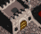
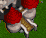

Ember Command
game design document — last updated 2026-07-19
Command Categories (from WC2 Strategy Research)
Warcraft II strategy guides converge on a small set of recurring player actions, regardless of the specific match. Categorizing them is the basis for the command set this game ultimately exposes — each category becomes one or more standing orders rather than a one-off click.
| Category | What WC2 players actually do | Abstract command(s) |
|---|---|---|
| Economy scaling | Pump peasants continuously; never stockpile gold — always be spending on peons, farms, or units; claim a second gold mine when the first thins out | Train worker, Harvest gold / Harvest lumber, future Expand (claim new resource patch discovered by Explore) |
| Production tempo | Keep the build queue full; add farms before hitting supply cap, not after; add a second barracks/hall if throughput-bound | Build farm, Build barracks, stackable structure slots |
| Scouting | Send a unit out immediately to find the enemy base; the early game is about information, not fighting; a second scout follow-up raises pressure | Explore |
| Base defense | Keep a standing garrison (roughly 6–12 units early game); use terrain/trees as a natural chokepoint wall; a strong defense is what lets the economy run safely | Defend, Patrol (early warning so Defend isn't caught flat-footed) |
| Raiding / offense | Small squads harass the enemy's peasants/lumber line before the main army engages; focus high-value targets (casters, siege) over trash first; attack in groups, not piecemeal | Attack (target economy vs. army is a future refinement — see note below) |
| Composition & tech | Counter enemy unit mix (ranged vs. melee, ground vs. air/naval); research upgrades rather than only massing more bodies; upgrade the town hall to unlock stronger units and buildings | See Upgrades section below — incremental upgrades and hall tier upgrades |
Attack order. A future Raid posture — a small peeled-off squad that targets enemy economy rather than the main force — may be worth splitting out once the army-split model (see Open question above) is prototyped.Concept
An abstract real-time strategy game inspired by Warcraft II. The key departure from classic RTS: you command at scale, not at the unit level. Instead of clicking individual units around the map, you issue high-level standing orders — workers go harvest, soldiers go scout — and the simulation resolves the details.
It should feel like being a general, not a babysitter.
Upgrade harvesting purchase with the same in-fiction justification (you still "built the Lumber Mill," you just didn't have to decide where).Order Philosophy
High-level orders (most gameplay)
These are standing, ambient directives. You assign them once and they execute continuously without further input. Workers don't need to be told where the gold mine is — they know. Soldiers don't need waypoints — they explore.
 Harvest gold — workers auto-pathfind to the nearest gold source and cycle continuously
Harvest gold — workers auto-pathfind to the nearest gold source and cycle continuously- Harvest lumber — same, for lumber
 Explore / scout — soldiers fan out to uncover the map, locate enemy bases, find resource patches
Explore / scout — soldiers fan out to uncover the map, locate enemy bases, find resource patches Attack — army engages any discovered enemy, advances toward known threats
Attack — army engages any discovered enemy, advances toward known threats Defend — army holds position around your base
Defend — army holds position around your base
Low-level orders (explicit, resource-gated)
These require a deliberate player action because they cost resources and have meaningful consequences. They are the "economy decisions".
- Train worker — costs gold + supply, queued at the Town Hall
- Train soldier / archer — costs gold (+ lumber) + supply, queued at a Barracks
- Build farm — costs gold + lumber, raises supply cap; assigned to a worker (see Construction, below)
- Build barracks — unlocks military training; assigned to a worker
 Structures
Structures
Construction — worker-assigned, not hall-queued
done — Buildings are constructed by tasking a worker (any worker group — idle, on gold, or on lumber), not by queuing at the Town Hall. Select a worker group → construct → pick a building from the list (stop backs out to the worker's normal order list without spending anything). Picking a building spends the resources immediately, pulls one worker out of that group into a building state (it stops harvesting and drops out of its group's count for the duration), and shows the in-progress build as its own tile in the structures row with a progress ring. Tapping that tile lets you cancel it — refunds the resources and returns the worker to whatever it was doing before. On completion the worker automatically resumes its previous order.
Farms / Food
Farms are purely a supply-cap mechanic. They just stack — you see a count, you know your cap. No placement, no per-farm UI. The game starts with zero farms; the Town Hall alone provides a base supply cap so the player isn't stuck at zero before building the first farm.
| Structure | Effect | Status |
|---|---|---|
| Trains workers; provides base supply cap | done | |
| +4 supply cap per farm, stackable, worker-built | done | |
| Unlocks soldier + archer training, worker-built; each barracks adds +1 concurrent training slot | done | |
| Grants lumber harvesting efficiency (see Upgrades) — no placement decision, the bonus is baked into the button | idea | |
| Unlocks the weapon/armor upgrade tiers (see Upgrades) | idea |
 Upgrades
Upgrades
Where WC2 splits tech into "buy a research item at a building" and "construct a new tier of town hall," this game keeps both, but each stays a single button — no placement, no tech tree UI beyond a flat list. The building names (Lumber Mill, Blacksmith) stay WC2-familiar in the UI; what's gone is the decision of where to put them.
Incremental upgrades
Small, repeatable-feeling improvements to existing behavior. Each is a flat percentage or radius bump, bought once (or a few times) with gold/lumber, and applies globally rather than per-unit.
| Upgrade | Source building | Effect | Status |
|---|---|---|---|
| Town Hall | Workers on Harvest gold return more gold per cycle | idea | |
| Lumber harvesting efficiency | Lumber Mill | Workers on Harvest lumber return more lumber per cycle | idea |
| Barracks | Patrol posture covers a wider perimeter — earlier warning of incoming raids | idea | |
| Blacksmith | +damage for soldiers/archers, tiered (1/2/3 like WC2) | idea | |
| Blacksmith | +defense for soldiers/archers, tiered (1/2/3) | idea |
Hall tier upgrades
Step-change upgrades to the Town Hall itself: Town Hall → Keep → Castle. Each tier is a single costly build action (gold + lumber, longer cooldown) that replaces the prior tier in place — no relocation, no rebuilding from scratch. Each tier unlocks new unit types, new structures, and/or new incremental upgrades that were previously locked.
| Tier | Unlocks | Status |
|---|---|---|
| Baseline: workers, farms, barracks | done | |
 Keep | Stronger units (e.g. Knights/Ogres), Blacksmith weapon/armor tiers 2, higher supply cap ceiling | idea |
 Castle | Top-tier units, siege (Catapults), weapon/armor tier 3, naval/air unlocks | idea |
 Units
Units
| Unit | Role | Orders | Status |
|---|---|---|---|
| Economy | Harvest gold / harvest lumber / idle | done | |
| Army — melee | Defend / patrol / explore / attack | partial | |
| Army — ranged | Defend / patrol / explore / attack | partial |
Army Orders
The player splits their army across up to three concurrent postures. There is no individual unit control — you assign a headcount (or a ratio) to each role and the simulation handles the rest.
| Order | Behaviour | Strategic purpose |
|---|---|---|
| Holds position at base; engages any enemy that reaches it | Last line — soaks raids that slip through | |
| Roams the perimeter of the base; intercepts incoming enemies early | Early-warning + forward shield; without it, raids arrive with no notice | |
| Fans out across the map; uncovers terrain, locates enemy base and resources | Unlocks attack orders; finds additional gold/lumber | |
| Advances on the known enemy base; available once base is located | Win condition pressure |
WC2 → Abstract: Conversion Examples
Where WC2 asks you to make a spatial decision, this game collapses it to a scalar or categorical one.
| WC2 action | Abstract equivalent |
|---|---|
| Build a lumber mill closer to the trees to cut return trips | "Upgrade harvesting" — increases worker gather rate globally |
| Place a second barracks somewhere on the map | "Add barracks slot" — stacks, increases concurrent training throughput |
| Manually march units to intercept a raid you spotted on the minimap | Patrol order — soldiers automatically intercept; the trade-off is you chose to station them there |
| Click footmen to attack enemy base after scouting it | Assign soldiers to Attack order — executes continuously until enemy is destroyed or order changed |
| Split melee and ranged to cover different lanes | Assign different unit types to different orders — footmen Defend, archers Patrol |
 Enemy Raids
Enemy Raids
Raids are the primary threat and the pressure that makes economy decisions matter. The game is real-time but structured around a day counter — a visible clock that marks progression and scales raid intensity.
- Early raids: small groups of Grunts and Axe Throwers (ground only)
- Raid size and frequency scale with the day counter
- There is no on-screen threat indicator — raids are hidden until detected by patrolling soldiers or they reach the base
- Later: Ogres, siege units (Catapults), then eventually naval and air units
- Water maps are viable because Transports carry ground units across water — the army split model still applies
Time / Day Counter
The game runs in real-time but exposes a day counter as the primary sense of pacing. todo
- Gives the player a mental model of "how much time do I have before things get harder"
- Raid waves are tied to day boundaries (or thresholds), not wall-clock minutes — keeps pacing readable
- Economy milestones (upgrade unlocks, unit caps) could also be day-gated
Resources
- Gold — primary currency, mined from gold mines by workers
- Lumber — secondary currency, chopped by workers, used for buildings and some units
- Oil — tertiary, for naval units (later)
- Supply — population cap, raised by farms (2 base + 4 per farm, up to some max)
Map & Exploration
The map is unknown at game start. Soldiers on Explore orders progressively uncover it.
- Discovering the enemy base unlocks the Attack order
- Discovering a resource patch makes it available for worker assignment
- Patrol range is limited to the base perimeter — it does not explore new territory
Win / Loss Conditions
idea — to be defined. Candidates:
- Destroy all enemy structures (classic WC2)
- Survive to a target day count
- Economic victory (reach resource or upgrade threshold)
Persistence / Save Progress
idea — not implemented yet. The game currently resets to a fresh state on every reload; players shouldn't have to restart from scratch each session.
- Autosave game state (resources, structures, worker/army counts, upgrades, day counter, explored map) to local storage on an interval or on key events
- Resume in-progress on reload — no explicit "load" step, it just picks up where it left off
- Local-only (browser storage) is sufficient for the prototype; no account system or server sync required yet
- Open question: what happens on win/loss — clear the save and restart, or keep a run history?
What This Is Not
- Not a micro-management game — no unit pathing, no formation control, no spatial placement
- Not a map editor — no player-placed buildings; structures just stack
- Not a full WC2 clone — WC2 aesthetics and units as reference, not as ruleset
UI Conventions Established So Far
Patterns already built and expected to extend to new features, rather than being reinvented per-feature:
- Grouped tiles — anything that can have more than one instance (workers by job, farms, barracks) renders as one compact tile with a
count-badge, not one tile per instance. SeerenderWorld()inapp.js. New stackable structures/units should follow this, not add per-instance tiles. - Stacked radial progress — a tile can show several in-progress timers at once (e.g. multiple workers harvesting, multiple barracks training) as concentric-position (literally overlapping,
position: absolute) semi-transparent white rings drawn directly on the job-badge icon. Each ring's alpha isRADIAL_HIGH_ALPHA / siblingCountso N overlapping bars don't blow out to solid white. Implemented inradialProgressSvg(). Production concurrency (how many bars can run at once for a producer) is capped byproducerCapacity(), which currently equals the building count (e.g. 2 barracks = 2 concurrent trainees). - Production queue chips — commands to train/build never disappear once you can't afford them or the queue is full; they just grey out (
button.disabled). What's actually queued shows as a separate row of tappable chips above the command grid (renderQueueList()), one chip per job type with a count badge. Tapping a chip cancels one instance of that job and refunds its cost (cancelJob()). This replaced an earlier single generic "cancel last" button. - Command buttons are icon-only — no visible text labels (a real WC2-style command card constraint). Accessibility name goes through
title/aria-labelinstead. Resource cost, when a command has one, renders as a small overlay strip of icon+number pairs anchored to the bottom of the icon itself, not as separate text below it. - Minimum font size is 14px everywhere — no smaller sizes, including in the short-screen media query. If a new label needs to be smaller to fit, the fix is a shorter label or truncation (
text-overflow: ellipsis), not a smaller font. - Cheat toggles (menu panel) —
fast train/fast harvestare persistent on/off toggles (not one-shot buttons) that multiply relevant tick decrements byCHEAT_SPEED. Useful for exercising production/harvest logic quickly during dev; keep them working as the sim grows.
Working With This Codebase
- The whole app is
index.html+app.js+styles.css, no build step, no framework.game(inapp.js) is the single mutable state object;render()does a full re-render from it on every change — there's no diffing, so it's fine to rebuild DOM subtrees wholesale (seerenderWorld(),renderOrders()). - Requests in this project tend to arrive as short, iterative, sometimes voice-dictated messages (filler words, occasional transcription errors — e.g. "the face" meant "the phase" indicator). Read them against the current screen/code state rather than literally when something doesn't quite parse; ask only if genuinely ambiguous.
- The user drives the app and checks changes visually themselves — don't spin up headless-browser verification passes proactively after a change. Explain what changed and why it should work; only reach for a browser check if explicitly asked.
- Icons live in
assets/icons/, extracted from WC2-style sprite sheets viatools/label-icons.py(a one-off labeling UI, not part of the running game).